Duke Nukem 3D
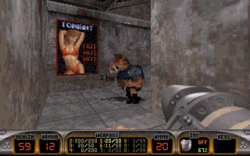
Идем на стриптиз
Дюк Нюкем (алсо известен как Нюк Дюкем, Дюк Нюк, Пиздюк, Ядерный Дюк, Дюк Тридюк и Герцог Ёбаш или просто Дюк)[1] — высокий голубоглазый блондин, персонаж одноимённой аркады, созданной компанией Apogee Software в 1991 году. Обладает приличной мышечной массой, своеобразным чувством юмора и прочей харизмой. Попутно является суперагентом ЦРУ и «главной силой» EDF (Earth Defence Forces — Силы Защиты Земли в переводе на великий и могучий) ибо всех остальных перестреляли пришельцы.
Сюжет
Как это и принято благодаря папаше Кармаку, сюжета в игре не намного больше, чем в фильме про сантехника и домохозяйку, тем не менее мотивация к уничтожению противника в произведении есть: Дюк призван победить злобного доктора Протона с его армией техномонстров-алиенов, мечтавшего захватить Землю. Развивая в сторону тему плоской аркады, компания 3D Realms в 1996 году осилила создание культового экшена Duke Nukem 3D.
Алсо, игра была полна чуть менее чем вся специфическим юмором. Уничтожение монстров происходит в городе Лос-Анджелес, который известен своим изобилием эмигрантов из Мексики, Азии, а также неграми, и является одними из городов США с самым высоким уровнем преступности. Поэтому белокурый парень, который очищает ЛА от плохих пришельцев и говорит вещи вроде «Your face, your ass… What's the difference?!» (Что жопа, что рожа - одно и тоже), вызывает невольную улыбку. Особенно у белых жителей ЛА, которые боятся выходить на улицу без оружия после 9 вечера.
Технология
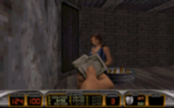
You wanna dance?
Собственно, 3D Realms создала свой Doom с блэкджеком и шлюхами, причем с настоящими. За определённую мзду некоторые из них показывали сиськи. Duke Nukem 3D представляет собой не особо-то и 3D игру, однако сильно продвинутую по отношению к тому же Doom’у: в ней имеется полноценный обзор мышью с характерным искажением реальности при уводе курсора с линии горизонта, прыжки и прочие вертикальные перемещения, зеркала и т.п. вкусные и новые на тот момент вещи. Кстати, олдфаг вспоминает, что вся эта радость была абсолютно не играбельна на популярных тогда нищебродских 486SX с тактовой частотой 40 Mhz, а на 386-ых, даже DX, не запускалась вовсе. Однако, она запускалась и очень даже летала на i486DX 50MHz.
Подобно Doom'у, трёхмерность в Дюке была «ненастоящая» (холивар бережно перенесён в обсуждения). Однако расовый движок Build позволял делать вещи, которые Думу и не снились. Например:
- Возможность создавать «помещение над помещением» (Дум сосёт)[2];
- Разрушаемость стен, изменяемая архитектура уровня (Дум продолжает сосать);
- Портально-секторная технология позволяющая делать абсолютно разные помещения в одном геометрическом пространстве (сосут все BSP-шники, начиная от первой Кваки и заканчивая вторым Фар Краем).
- Полуобъеденный труп бойца из Doom’а в эпизоде «Камера смертников» (в тюремной часовне втайнике за алтарем). Дум отсосал!!!
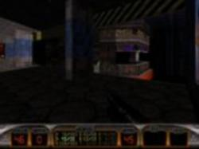
метро
Еще одним невиданным доселе новшеством Duke 3D стало изобилие всевозможных элементов интерактивности: разрушаемые обьекты, отзывчивые девушки, транспорт, зеркала, всевозможные микрофоны, телевизоры и кинозалы, унитазы, в которые можно было невозбранно поссать, и говно, которым в героя кидали монстры-пулеметчики, в которое регулярно вляпывался наш герой, говоря при этом: "Shit happens.". Еще можно было поиграть на бильярде.
В Дюке была также редкая возможность беспрерывно пинать врагов одной ногой, передвигаясь при этом на другой с достаточно резвой скоростью. Алсо, в ранних версиях можно было невозбранно бить сразу двумя ногами. Если же при применении двух ног подойти к замороженному монстру, чтобы его разбить, на экране можно увидеть сразу три ноги (в ранних версиях).
Особо доставлял в Дюке Multiplayer. Время, проведённое за беготней по уровням, уменьшением и последующим растаптыванием друзей измерялось сутками, а так как новые карты можно было создавать с помощью идущего вместе с игрой редактора, каждый мог слепить свой собственный уровень.
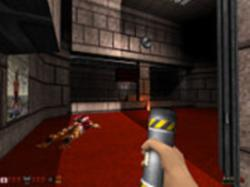
Polymer такой Polymer...
А на сайте http://hrp.duke4.net/ можно скачать кошерный High Resolution Pack для Дюка который преобразует игру в «честное» 3D и чудно работает под винды. Пусть картинка не дотягивает до всяких Crysis и F.E.A.R., но вспомнить молодость и пройти ещё разок сам б-г велел.
Алсо, использование всех возможностей Polymer-renderer'a заставляет относительно современные компы тормозить так же как в своё время под оригинальным Дюком тормозили 486-е.
Duke vs Quake
Набигающая школота упорно засирает статью нагло утверждая, что:
Дюк это клон Дума
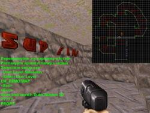
А ваш Дум такое умеет? Ну и кто тут клон? Да, батхёрт!
Утверждать подобное некорректно. Эдак все 3D-экшены можно в клон Дума Вульфенштейна Ховертанка. А все стратегии в клоны КБ.
Клон — это игра, копирующая игровой процесс другой игры или основанная на ее движке (больше применимо к стратегиям).
Дюк основан на совершенно других технологиях, имеет отличную от Дума атмосферу и стиль игры. Он не может быть клоном только потому, что «и там и тут спрайты», ибо спрайт — не отличительная черта Дума. Они появились задолго до него и надолго его пережили. Так же Дюк не может быть клоном Дума потому, что «и там и тут бегают и стреляют». Бегают и стреляют везде.
После коллосального успеха дума все игры, которые мы сейчас зовем FPS или «шутер от первого лица» (©Бонус и Гамовер) начали называть «клоном дума», в частности из за Heretic и Hexen, которые были основаны на движке дума. Так же фульф можно называть стрелятельным трехмерным лабиринтом. Но с течением времени название «клон дума» устарело и заменено более корректным First-person shooter.
На самом деле дюк имеет похожий на думовский движок под названием BUILD от Кена Сильвермэна.
- Особые отличия:
- лучшая работа с «декорациями» — в думе кроме свечей и бочек не разгуляешься, в дюке можно вставить любой спрайт\текстуру из игрового архива, его поведение уже будет зависить от CON скриптов
- Технически основной элемент действия (телепорт, «половая кнопка» и т. п.) — сектор, то есть многогранник. В думе же это линии.
- Например в думе 1 есть лаг в конце последнего уровня первого эпизода — большой телепорт разового применения. Проходишь в него и получаешь адский батхерт. На 5% хелса происходит выход из эпизода. Однако же в мультиплеере или же с IDCLIP можно вернуться к телепорту и попытаться войти в него еще раз. Если входишь со стороны с которой уже заходил кто-то то херушки. Но вот с другой стороны… но как обычно всем похуй
- Наклонные полы — в думе не было и в помине, все плоско как грудь лоли, однако поздние порты типа EDGE и zDoom умеют и это.
- Звуковые, цветовые, световые эффекты, прозрачность, плоские спрайты.
- Была возможность подойти к экрану видеонаблюдения и полюбоваться на себя, любимого (а равно проверить наличие монстров, срабатывание свитчей, открытие ворот и т. п.), со стороны. До Дюка нигде, по-моему, реализована не была.[3]
- Сектор-над-сектором — Вот оно! «настоящее» три-дэ. Правда, реализовано уже в движке поздней версии и было использовано в других играх типа Shadow Warrior или Blood. Несмотря на то, что карта игры представляет из себя «одноэтажный» чертеж с информациями тэгов уровней, спрайтов, высот и наклонностей разработчики сделали возможным вид одного сектора из другого. То есть пол в одном секторе делается прозрачным, в другом делается прозрачным потолок, делается особая BUILD’овская магия, и вуаля — мы видим содержание второго сектора из первого в режиме реального времени! Так можно было делать прозрачной воду, висящие платформы и т. п. Ограничения сего — только один сектор можно поставить видимым. Не получится сделать колодец (имеется ввиду что одновременно можно видеть только 2 сектора — свой и чужой. третьего не получится увидеть) так же могут возникнуть графические лаги со всякими «летающими кубами»
- зеркала
- алинг полов и потолков. в думе текстура пола\потолка всегда была расположена под определенным углом и в определенной позиции — так кривопоставленный сектор с лампой посередине будет иметь лампу по краям (врап текстуры), чтобы это поправить, надо сдвинуть сектор. хотя это было исправлено в более современных портах типа EDGE. В дюке же текстуру пола\потолка можно передвинуть, повернуть (вернее сделать ее относительной к диагональной линии), повернуть на 90, уменьшить в 2 раза.
- движущиеся сектора — поезда, платформы, «стартрек» (Так и написано в мануале — star-trek doors)-двери (открывающиеся горизонтально)
- скриптинг, тонны его! транспортёры, вода, кнопки, и проч и проч. к слову сказать, ВСЁ, что в игре движется или «работает», реализовано через CON скрипты, некоторые вещи, правда, хард-кодед.
это для тех, кто любит углубляться в технологию. а для остальных:
- в России дюк всегда шел отдельно от дума, его не называли клоном дума.
- в отличие от ID, 3D realms первая додумалась ставить оружие справа а не по центру.
- дюк имеет совершенно отличный от дума геймдизайн и атмосферу
- в дюке мы не видим лицо главгероя в статусбаре оно нахрен кому сдалось.
- дюк харизматичный персонаж и любит отмачивать комментарии
- в дюке больше способов уничтожить противника нежели в думе
- в дюке больше типов атак.
- ваш кибердемон разжирел и сел на антиграв-платформу. Пулемет сильнее ракеты, особенно вкупе с гранатами.
Дюк НЕ сосал у первой Кваки
Правда Дум вышел за два с гаком года до Дюка, но всем похуй. Тем более, что расово трехмерный Quake, которому Дюк эпически просасывает, появился в этом же году, только шестью месяцами позже.
— (c) коментарий
Человек писавший эти строки не жил в те времена. Ибо в противном случае он бы знал, что Дюк весьма достойно конкурировал со второй Квакой.
Современный исследователь конечно же может сделать вывод, что спрайтовый Дюк отсосал когда появился полигонный Квак. Но трёхмерность моделей врагов (вау, оно такое разностороннее! :) легко компенсировалось уёбищностью оных. Сравните хотя бы хтонического кабана из Дюка, инопланетную медузу или ещё какую уродину с любой моделью из Квейка. Работы Пикассо эпохи кубизма. Квейк хорош, никто не спорит. Но Квейк это совершенно другая игра!.
В Дюка рубились и во времена первого Квейка и во времена второго. А некоторые играют до сих пор. Ибо увлекательность игры зависит не от того, когда она появилась и какие технологии использовала, а от мастерства создателей. А те, «кто понимал в прорывах и гонял Quake Test Deathmatch» ничего не понимают в играх и дрочат исключительно на количество полигонов, детализацию текстур, версию шрейдеров и требования к железу.
А если подумать… Квейк — суровая игра — зомби, уроды, демоны. Мочим мы их с шотганов, РЛ, гвоздометов, электрошокера. Замки, подземелья, катакомбы-угу,и мрачная атмосфера, за что и любим.
Дюк нюкем — веселая игра — пришельцы, мутанты, пришельцы, летающие хренотени. Делим на бесконечность их мы пистолетом, ружьем, пулеметом, РЛ, уменьшителем в паре с teh могучей ногой Чака Норриса Дюка™, увеличиваем их пока не лопнут, замораживаем насмерть, люто мочим их парной скорострельной мини-ракетницой Devastator (местная вундервафля). А где? Да везде! Кинотеатры, суши-бары, отели, банки, тюрьмы, секретные военные заводы, голливудские закулисья, ущелья, всевозможные орбитальные станции, стадионы, магазины, и прочее, и прочее, в комплекте шел даже редактор карт который позволял добавить в вашего дюка вашу квартиру и в комнату тещи поставить fatcommander’а чтобы символизировало. Алсо, в Дюке были телки, которые весело танцевали под музыку и трясли сизьге. В дюке также была интерактивность. Где вы это видели в Quake?
Трёхмерность
Положа руку на сердце и беспристрастно подойдя к извечному холивару 2D vs. 3D следует признать, что и Дум и Дюк были по настоящему трёхмерными играми. И название Wolfenstein 3D — не трап. И тетрис, кстати, тоже трёхмерен, просто из-за ракурса эта трёхмерность не видна и фигурки кажутся плоскими. И не ЩИТО, а так оно и есть. Утверждать обратное, аргументируя тем, что трёхмерный уровень описывался как двухмерная плоскость некорректно. Ибо тогда и современные игрушки получаются «не совсем тридэ». Ведь современные BSP технологии это тоже нихуя не пространство, а дерево описывающее удалённость плоскостей друг от друга.(но ведь в пространстве же!!!!)
Ежели на выходе получается нечто напоминающее трёхмерное пространство, то какая нахрен разница каким способом это было реализовано?
Нет, вы идите! Идите в DUKE3D.CFG и пропишите там ScreenMode = 7! (В комментариях полный список) И не забудьте надеть красно-синие очки! Вот тогда вам будет трёхмерность, а первый квак пососёт по определению!
Duke Nukem о вундервафлях
Игра, наряду с телками и приколами Дюка, доставляла пушками, которыми пользовался ГГ. Среди них есть как просто хорошие так и Epic Win'овые стволы. Что радовало - никакой перезарядки. (Про пистолет забыли?) Вот перечень в порядке статус бара:
- Нога Дюка (правая) - Стоит под цифрой один.
- Нога Дюка (левая, mighty foot) - вызывается клавишей ` (слева от единицы). Конечно, пинок особо сильно здоровья алиенам не подпортит, но процесс застреливания ускорит на близком расстоянии. Замороженных добивать, не тратя патроны - самое оно. Собственно, достаточно подойти, пнёт автоматом. Также можно было ударить левой и правой ногами одновременно, что доставляло.
- Пистолет (Pistol) - С этим оружием в руках обычно и начинается великое противостояние Дюка. Слабый, но довольно скорострельный (но с многостволом не сравнится). С одной обоймы можно свалить базовых врагов. Патроны выпадают с рядовых собакоголовых инопланетян. Перезаряжается только автоматически, заставляя подгадывать остаток патронов. Обойма 12 патронов.
- Шотган а.к.а. Дробовик а.к.а. Бумстик (Shotgun) - Винрарное средство по борьбе с инопланетной заразой. С одного-двух выстрелов можно вынести любого врага (за исключением парочки уродов и боссов). Аноним считает лучшим оружием в игре именно дробовик, поскольку патронов на него всегда хватает, мощно, а главное весело. Кроме того, здешний дробовик имеет более менее реалистичный разброс (дробь летит довольно компактно, в то время, как в большинстве шутеров разброс составляет весь экран)
- Многоствол (Chaingun Cannon) - Трехствольный и скоростной способ сказать "Привет-Пока" близлежащим урытлам. Очень винрарен под водой, ибо Звук. Жрет патроны со страшной силой, но оттого хуже не становится.
- Ракетомет (Rocket Launcher a.k.a. RPG (не Ролевая Игра)) - Win. Epic Win. Мощь и стать Дюка Нюкема. Как водится - самая мощная вундервафля, с которой сравнится разве что взгляд самого Дюка. Вместителен и довольно скорострелен. Одно из лучших средств Экстерминатуса в играх вообще. Со стенами и монстрами вплотную стрелять не стоит, а не то...
- Бомбочки с ДУ (Pipe Bombs) - Мелкие гранаты с дистанционным управлением. Чтобы бросить еще одну надо было нажать 6 еще раз (6 - базовое положение бомбочек на раскладке). Взрывались довольно мощно и с хорошим разрывным эффектом дробили все в мясо. Хорошо подходили для тех ситуаций когда враг на нижнем этаже, а другие стволы не достают.
- Уменьшалка (Shrinker (в версии Atomic Edition шел с Увеличителем\Expander)) - Фиговина, стреляющая зелеными хреновинами, которые уменьшают врагов (В основном. На некоторых не действует). Уменьшенных и беспомощных врагов затем можно было невозбранно раздавить ногой. Если направить на зеркало, то отражалось и Дюк сам мог посмотреть на мир задрав свой уменьшенную башку вверх. Так же иногда попадаются встроенные в стену уменьшители чтобы пройти дальше по уровню. В Atomic Edition новые монстры могли невозбранно уменьшить ГГ, если тот находился дальше определенного радиуса.
- Опустошитель (Devastator weapon) - Двуствольная вундервафля Пентагона. Стреляет мини-ракетами типа Стингера с огромной скоростью. Полным комплектом ракет (99 зарядов) можно завалить Императора, я гарантирую это! Винрарная на ряду с Ракетометом пушка. Патроны - редкость, поэтому рекомендуется оставлять на боссов.
- Лазерные мины (Laser Trip Bomb) - Мины с лазером, кой пересечешь и мина взорвется. После установки есть пара секунд чтобы покрасоваться перед "объективом". Враги всегда пересекают луч лазера. Всегда. Взрыв нехилый и сносит довольно много здоровья.
- Холодильник (Freezerthrower) - Морозилка она и в Африке морозилка. Стреляет кристалликами льда которые понижают здоровье до 1 хп и оставляет в неподвижной позе, полностью синим. Можно разбить сразу, можно подождать пока оттает и застрелить/запинать/взорвать/послать на хуй потом. Тут тоже работает трюк с
зеркалами - если стрелять в зеркало стену напротив себя - останешься с 1 хп, без брони и полностью синий. Но потом оттаешь. Удобно стрелять из-за угла.
Меметичность и т.п
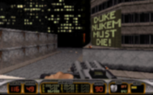
Дьюк Ньюкем должен УМЕРЕТЬ!
Вряд ли еще кто-то вспомнит, но погугля, можно и найти.
Алсо, в печально известной песне группы Сплин, «Орбит без Сахара» имелись следующие строчки:
Родригес будет жить еще долго
А Duke Nukem должен умереть[4]
Более того — в одной русификации оная песня заменяет титульную мелодию.
Излюбленная фразочка Дюка «Come get some» — своего рода англоязычный мем. Популярна во всяких там америках, особенно на юге страны в городах с развитой преступностью, вроде того-же Лос Анжелеса, в котором и разворачивается действие игры. Фраза, не содержащая ругательных слов, но при этом имеющая вполне конкретный оскорбительный подтекст. На великий и могучий переводится двояко. Переведённая дословно означает «подойди и получи чуток». Но может быть понята еще как «подходи, получи...» или «подходи, огреби чуток пиздюлей...» Из-за чего применяется для осторожной провокации оппонента… Так-то.
Алсо, многие фразы, произносимые Дюком, являются цитатами из разных фильмов\игр.
Duke Nukem Forever
Былинная игра, разработка которой велась с 1997 года (!!!) по 2009. Игру уже обещали выпустить более 9000 раз, но всякий раз все заканчивалось былинным отказом. В результате игра обросла прозвищами ForNever (НаНикогда), Forever Delayed (Навсегда Переносимый), Never (Никогда), Whenever (когда-нибудь), Neverever (никогда и ни за что). Надо заметить, что подобным образом относились и к Сталкеру, и к Prey, но они всё-таки вышли. По-видимому, выход совпадет с пробуждением Ктулху и прочими неиллюзорными признаками прихода Толстого Полярного Лиса. По некоторым данным игра не выйдет никогда [1] или её будет делать другая фирма.
Недавно оказалось что игру сейчас доделывают Gearbox, и нет, это не слухи. После закрытия игру доделывали выходцы из 3D Realams самостоятельно. А потом пришла Gearbox на белом коне и начала финансирование, ага. Алсо Дюк успел посетить PAX 2010, сейчас же игра почти готова, просто разработчики адаптируют игру для консолей.
Также в свое время безмерно доставила тайтловая музычка "Grabbag", пусть и исполняемая с помощью миди-синтезатора. В последствии этот недостаток был исправлен композером OST к Дюку - Lee Jackson'ом, исполнившим сей шедевр на нормальных инструментах. Затем культовая треш-группа Megadeth запилила главную тему игры на тёплых, ламповых электрогитарах для сборника "Duke Nukem:Music to Score By". Желающим послушать.
Learn to Let Go: How Success Killed Duke Nukem — история о том как просрали все полимеры (на английском). Успех, который погубил Дюка Нюкема — перевод вышеприведенной статьи на великий и могучий. ВНЕЗАПНО, педивикия обрадовала всех(http://ru.wikipedia.org/wiki/Duke_Nukem_Forever) на днях заявлением, что релиз Форевера не просто будет, а он уже совсем не за горами - 1 февраля 2011 года.Преданным фанам луркать самостоятельно, всем остальным в очередной раз надеяться...
Неполный список эпических фразочек Дюка
- Come get some!
- Who want some!
- Damn, those alien bastards are gonna pay for shooting up my ride!
- Damn, that’s the second time those alien bastards shot up my ride!
- Nobody steals our chicks… and lives!
- It’s time to abort your whole freaking species!
- Heh heh heh… what a mess.
- Your face, your ass… what’s the difference?
- Uhhhh… That’s gotta hurt!
- Damn, I’m good.
- Let God sort’em out — при особо циничном разрыве монстров. Очередная из множества бесчисленных отсылок к известной фразе Арнольда Амальрика.
- Boooorn to beeeee wiiiiild! — Произносится с полным отсутствием слуха и голоса в микрофон. Отсылка к винрарной песне Steppenwolf с одноименным названием.
- It’s time to kick ass and chew bubblegum… and I’m all outta gum.[5]
- Die, you son of a bitch!
- Blow it out your ass!
- Hmm, that’s one doomed space marine! — при виде трупа пехотинца из ДУМа. Шутка создателей. До кучи вызвала нехилый холивар в своё время, в виде судебного разбирательства с id. Впрочем, id удостоились epic fail-а
- Come get some! — при получении какого либо вооружения. Распространенная фраза у Морских Пехотинцев КМП США. Значения разнятся от «подойди и получи пиздюлей» до «отжарь клевую ципу» или «завали вон того хаджу».
- Hail to the king, baby! — также при получении оружия. Отсылка к Evil Dead.
- Damn, I’m looking good — при взгляде в зеркало
- I’m gonna get medieval on your asses! — отсылка к Pulp Fiction
- I’m gonna put the smack dab on your ass!
- Hmm, don’t have time to play with myself. — при попытке использовать игровой автомат Duke Nukem 2. Литературно переводится как «У меня нет времени на мастурбацию». Ну вы понели.Тут кагбе игра слов — «play with myself» может означать в лит. «мастурбировать», и в надмозг. «играть с собой», причем оба варианта, в принципе, верны.
- I’ll rip your head off and shit down your neck! — угроза была исполнена. Частично - отсылка к Gunnery Seargeant Hartmann'у из Full Metal Jacket.
- Somebody is gonna frickin’ pay for screwing up MY vacation! — в оригинале говорится в начале четвертого эпизода, ибо Дюка внезапно, в разгар отпуска послали на задание
- What are ya waitin’ for… Christmas? — при долгом периоде бездействия игрока
- Who wants some? — опять при получении оружия
- It’s down to you and me, you one-eyed freak! — при столкновении с финальным боссом на третьем эпизоде
- Yippie kay-yay mother fucker! — явный намек на фильм «Крепкий орешек», ну, или если хотите, «Die Hard»
- Yo ho ho and a bottle of Jack! — Йо хо-хо, и бутылка Рому! Стивенсон, Остров Сокровищ
- You’re an inspiration for birth control! — за такие фразы все любят Дюка, алсо «Вся твоя жизнь — реклама безопасного секса» (ДМБ)
- You’re gonna die for that!
- AARRRGHHHHH!!! — падение с о-очень большой высоты
- It hurts to be you.
- Lucky son of a bitch!
- Ha Ha Ha! Payback time!
- Damn, you’re ugly.
- You suck!
- I’ve got balls of steel! — пожалуй известнейшая фраза.
- Eeeeh… this sucks — при смерти
- Damn.
- O-oooh… that’s gonna leave a mark.
- I came, I saw, I kicked ass — отсылка к «Пришёл. Увидел. Победил».
- You talking to ME!? — отсылка к фильму «Taxi Driver» c Де Нирой.
- There are only two ways this could end… and in both of them you die.
- Crouching mutant, hidden pipebomb! (как бе «Крадущийся Тигр, Затаившийся Дракон»)
- Let’s rock!
- Yeah, piece of cake!
- I ain’t afraid of no quake.
- O-ooh, this really pisses me off!
- Now I’m really pissed off!
- Suck it down!
- O-oh! I needed that! — подбирание аптечки/пользование медкитом при низком здоровье
- Holy shit!
- Holy cow!
- Rockin’!
- Get that crap outta here!
- Well, that was fun
- Is that all you’ve got?
- No way i’m eating THIS SHIT — Dukeburger, хуле
- I think it’s time for me to go postal.
- Eat shit’n’die
- Ughm! (попытка использовать неиспользуемое) и после трех неудач — «Where is it?»
- Groovy! Также отсылка к Evil Dead.
- Aah… Much better — отлил в сортир (+10 HP один раз на уровень между прочим)
- See you in Hell!
- Damn, that was annoying! — после убийства кавайного лопочущего робота в виде Микки Мауса
- Shake it, baby! — сиськи за баксы
- You wanna dance? — сиськи еще раз
Дюк Нюкем жив
Дюк Нюкем был настолько доставляющим и настолько запомнился некоторым олдфагам, что особо упоротые создали немало попыток продлить игре жизнь, улучшив графику до современного, приличного уровня.
Алсо
Почему-то никто не вспомнил про Duke Nukem: Manhattan Project, который несмотря на вполне сносный геймплей оказался фейлом (пипл не схавал). Анону игра запомнилась, прежде всего, эпической мессагой (после решения несложного пазла на одном из уровней): Мозг рулит!А я вот не помню такой фразы. Но если речь идет про головоломку с кнопками в полу, то после ее решения он говорит «Sometimes I even amaze myself».# Нет, паззл был с крутящимися, хм, мостами.
Еще имелась поделка игрушка с названием Shadow Warrior от 3d Realms на движке того же Дюка. Запомнился жутким акцентом (надмозги ниасилили: «enter a tiny secret» стал «это особый китайский секрет») и многофункциональностью оружия: кулаки (на чучелах можно поднять здоровье тренировкой), меч (по убойности превосходящий гранаты), сюрикены, 4-ствольный дробовик (с возможностью давать очереди из 4 выстрелов), УЗИ (2 шт, можно одну убрать), ракетница (опции: карточка на 5 самонаводящихся ракет, ракета с ядерной боеголовкой), гранатомёт, бомбы с шипами, рейлган (квачный — УГ), голова сержанта гвардейца (огнемёт с 3 режимами), сердце гориллы (рядом начинает бегать такой же ниндзя с рейлганом). Код с 2005 года доступен по GNU. Достоин отдельной статьи.
Также почему-то не указаны игры на PS-one. Duke Nukem: Time to Kill и Duke Nukem: Land of the Babes и для Nintendo 64:Duke Nukem 64
Галерея
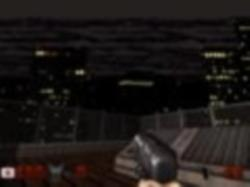
Та самая надпись HOLLYWOOD. Голливуд - район Лос Анжелеса.
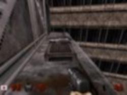
Come get some!
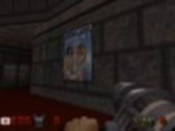
Damn!
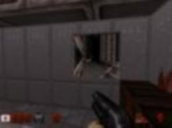
Видеонаблюдение.
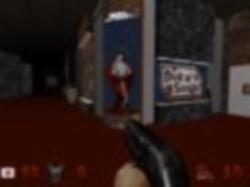
Japanese girls!
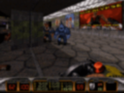
Кабан мороженый (справа).
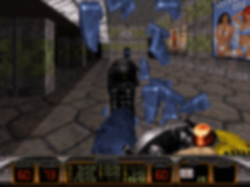
И разбитый.
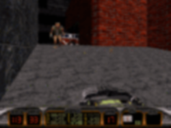
Чиби−пушка делает мутантов такими кавайными ^_^ .
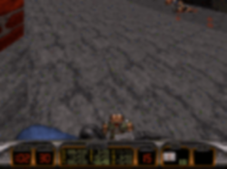
Не дови на меня! Пожалуйста...
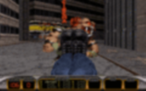
Тот самый двойной Ван Дамм удар с обеих ног!
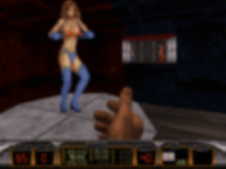
Jing it, baby!
Примечания
- англ. Duke Nukem, Ньюкем — транскрипция выражения (призыва) «Nuke’em» — «Nuke them!» — «to nuke», в свою очередь, — взорвать кого-либо с помощью nuclear bomb, то есть атомной (ядерной) бомбы или сравнимого по мощности ОМП. Дюк (Дьюк) — расово-американское обобщение целого спектра имен «белого человека». В частности, у Ф. Купера «Дьюк» в «Пионерах» — это «Мармадьюк», также может быть искаженно-уменьшительным от «Dunkan», «Donnegan», «Douglass», «Dennis», «Edward», и более 9000 прочих расовых англо-саксонских и ирландских имен. Таким образом, в переводе на расово русский, Дюку Ньюкему более-менее соответствует Ваня–Вася–Вова «Всем–въебу». Мало кто знает, сначала Дюка звали Duke Nukum, так как название Nukem было зарегистрировано в мультике Captain Planet. На самом деле, имя персонажа не было закопирайчено, так что ко второй части игры Duke Nukum стал известным сегодня Дюком Ньюкемом.
- Расово верный «room-over-room» создали лишь в игре Blood на том же Build’e (правда доработанном немало), здесь же его урезанная версия (никогда не бывало такого, что слышно как по вам стреляют, а никого собственно и нету? это ваши враги «этажом» выше/ниже «замечают» вас, так как секторы по высоте не разделяются и находитесь вы в одном и том же секторе, хоть и недосягаемо друг для друга)
- В один год с Дюком вышла игрушка Eradicator, в которой так же можно было смотреть в двух направлениях одновременно.
- На втором уровне первого эпизода, заходя в комнату одного из зданий (там вроде рядышком красная карточка лежит и пулемёт), нажав кнопочку и выглянув в окно, можно увидеть, как на фасаде противоположного дома появляется плакат с надписью «Duke Nukem must die!»
- Подобная фраза проскользнула в Фоллауте 2 в городе REDDING, в разговоре со шерифом. При её произнесении отношение к вам резко ухудшится… А вообще, фраза взята из фильма [They Live].
{kind=link}
{kind=link}
{kind=link}
{kind=link}
{kind=link}
{kind=link}
{kind=link}
{kind=link}
{kind=link}
{kind=link}
{kind=link}
{kind=link}
{kind=link}
{kind=link}
{kind=link}
{kind=link}